GoLand 2020.2 Beta 版发布：go.mod 升级以及对泛型的实验性支持
GoLand 2020.2 达到 Beta。这意味着我们将结束一连串的新功能开发，将重点转移到完善我们已经完成的工作上，并开始计算发布日之前的日子！
与我们的“抢先体验计划”版本相比，该测试版非常稳定，但请记住，可能仍然在某处存在 Bug。
同样请注意，此 Beta 版本是 EAP 周期中的最后一个版本，不需要订阅即可使用（如果您只是想尝试 GoLand，请尝试）。测试版通常会在发布候选版本之后出现，一旦我们发现该版本足够好并且可以在您的计算机上安装了。
在此发布周期中，我们为即将推出的 GoLand 2020.2 打包了 Go 模块的新功能，更好地呈现了代码中可能存在的问题和薄弱环节，提供了新的代码检查功能以及新的代码编辑功能，例如期待已久的 “Add Caret Per Selected Line”，改进了后台流程，使其更透明，更快，更多！
让我们来看看即将发布的版本中的新功能。选择您感兴趣的主题，或浏览整个博客文章以了解每个新功能。
- Go Modules
- Generics a.k.a. Type Parameters
- Code Editing
- Code Inspections
- Take Variadic Arguments Under Сontrol
- References from Comments
- Save Projects as Templates
- Under the Hood Processes
- Version Control
Go Modules
支持 GOMODCACHE 环境变量
从 Go 1.15 开始，可以使用新的 GOMODCACHE 环境变量将 Go Modules 缓存的默认位置从 $GOPATH/pkg/mod 更改为另一个文件夹。
为此，只需在 “Preferences/Settings | Go Modules | Environment” 设置 GOMODCACHE 即可。
IDE 将识别自定义位置，并将其用于具有依赖关系的所有后续操作。同步依赖项快速修复程序（可通过 Alt + Enter 实现）会将依赖项下载到 GOMODCACHE，外部库也将在新的自定义位置显示依赖项。
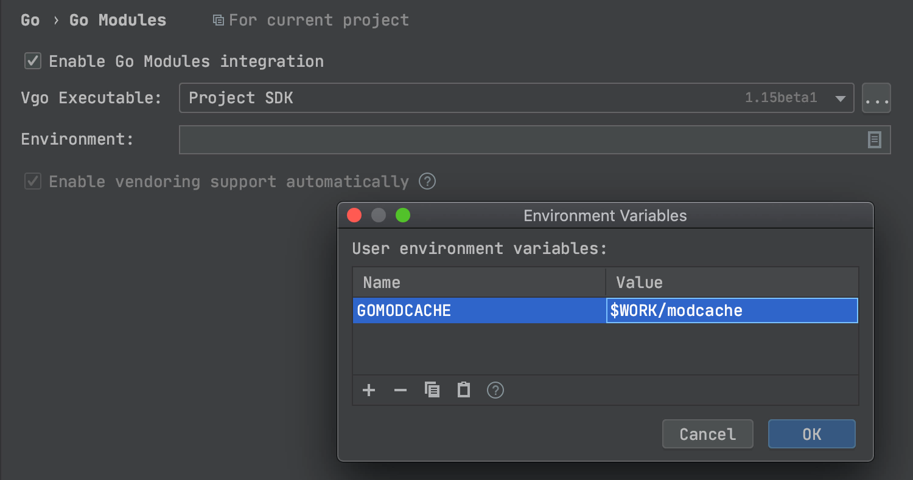
升级 go.mod 文件
行注释（在 Windows/Linux 上为 Ctrl + /，在 macOS 上为 ⌘ + /）可用于 go.mod 文件。
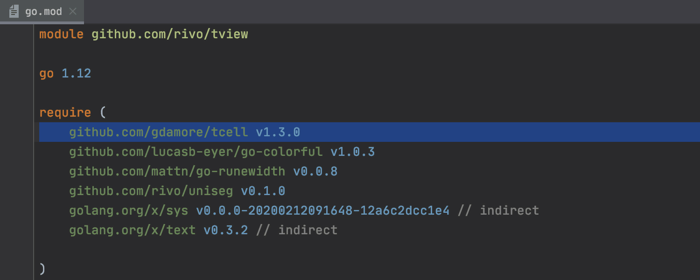
现在，当您键入 replace，exclude 和 require 语句的左括号时，GoLang 立即自动为你添加右括号。
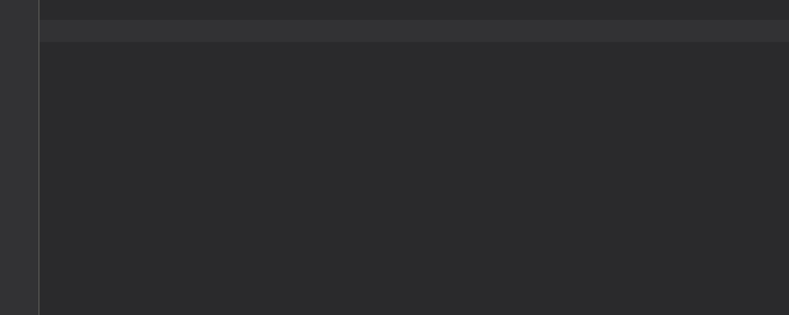
泛型（又称类型参数）
6月16日，Go Team 宣布了泛型（也称为类型参数）设计草案。请访问 Golang 文档以获取有关该概念的完整详细信息 。
这是一个重大的发展，因此我们立即着手增加对它的支持。GoLand 2020.2 Beta 提供了对泛型的实验性支持，您可以通过在 Settings/Preferences | Go 启用对泛型的实验性支持。
此初始支持提供语法高亮显示和基本参考解析，并且仅在 go2 文件中有效。
请注意，有关泛型的工作仍在进行中，我们目前尚无法提供全面的支持。
尽管如此，请分享您的体验和您可能有的任何建议。它确实可以帮助我们完善到目前为止已完成的工作，因此我们可以使其可靠并使用更高级的功能进行填充。
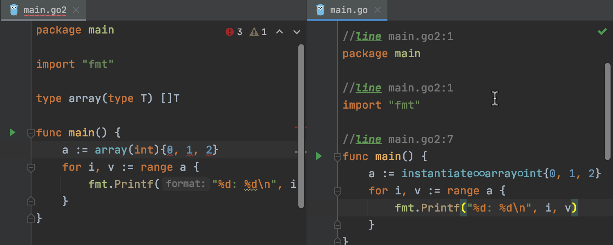
代码编辑
想要将快速修复的结果应用于代码之前预览其结果，请使用 Alt + Enter 快捷方式调用显示上下文操作，选择所需的快速修复，然后在 macOS 上按 Alt + Space 或在 Windows 和 Linux 上为 Ctrl + Shift + I。
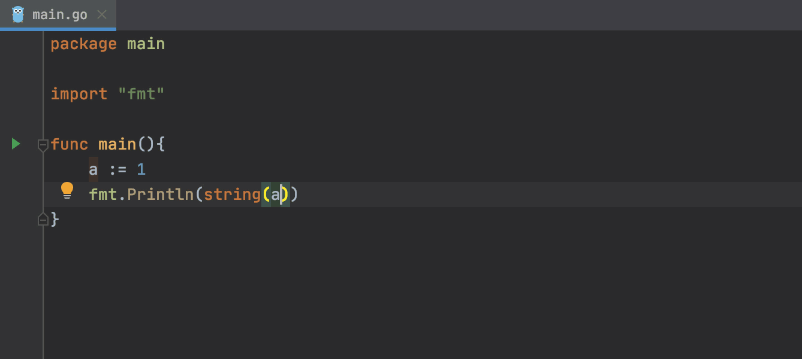
新的“按选定的行添加插入（多行操作）”操作会在每个选定行的末尾插入，并取消选择这些行。在 Windows/Linux 上使用快捷键 Alt + Shift + G 或在 macOS 上使用 ⌥ + ⇧ + G 调用它。
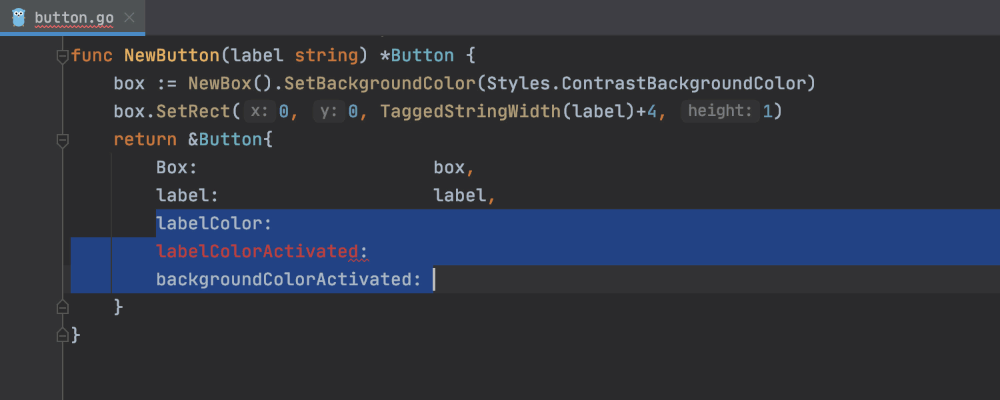
在 Preferences/Settings | Editor | Code Style | Go | Wrapping and Braces 中为调用参数，函数参数和复合文字元素配置换行。或者，您可以使用 Alt + Enter 键，调出 Put arguments on separate lines 和 *Put arguments on one line，*以手动拆分和合并元素。
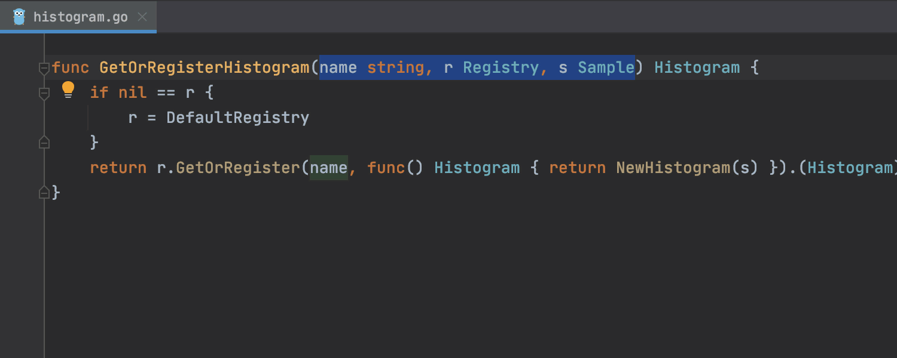
代码检查
GoLand 2020.2 有了一个新的检查部件（Inspections Widget）！它位于代码编辑器的右上角，显示当前文件中的警告，错误和错别字数量。您可以使用箭头图标或“下一个错误”操作（F2）遍历它们。
该小部件可让您配置突出显示级别（从无、仅错误或所有问题中选择），更改检查的严重性级别以及切换紧凑视图。
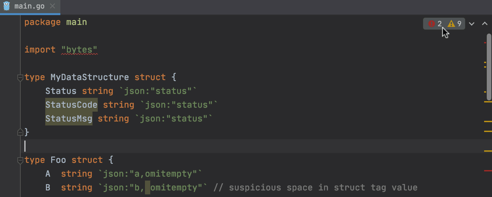
我们还添加了一个“问题视图”工具窗口，该窗口显示当前文件中的警告和错误列表，为您提供这些问题的描述，并让您立即使用 Alt + Enter 进行修复。在“问题视图”工具窗口中右键单击问题，以直接移至发生错误的代码行。要打开“问题视图”，请单击“检查”小部件或转到 View | Tool Window | Problems。
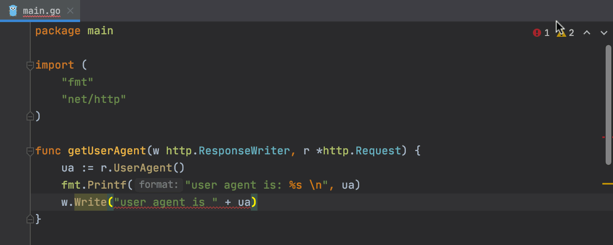
GoLand 2020.2 现在在所有情况下都在项目视图中标记包含错误的文件，以使您更容易发现它们。
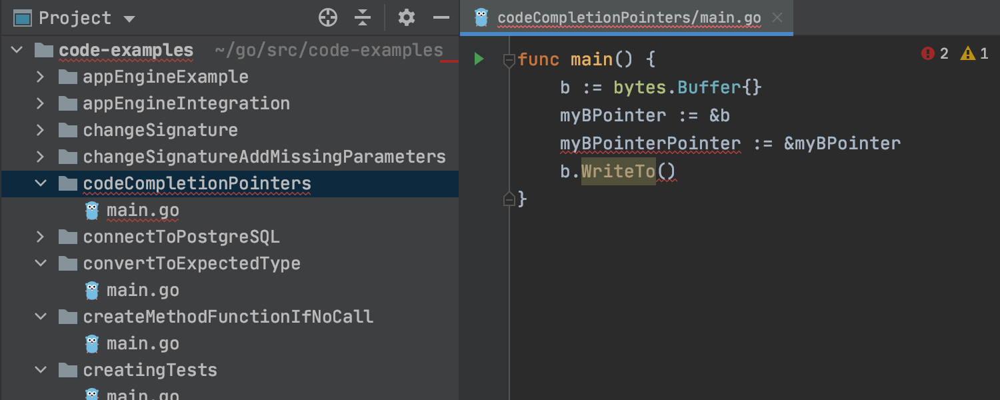
现在，新的代码检查可以处理 string(int) 转换可能出现的问题，这些转换返回 Unicode代码点 x 的 UTF-8 表示形式，而不是预期的 x 十进制字符串表示形式。GoLand 将通知您有关此类潜在错误的信息，并提供专用的快速修复程序。
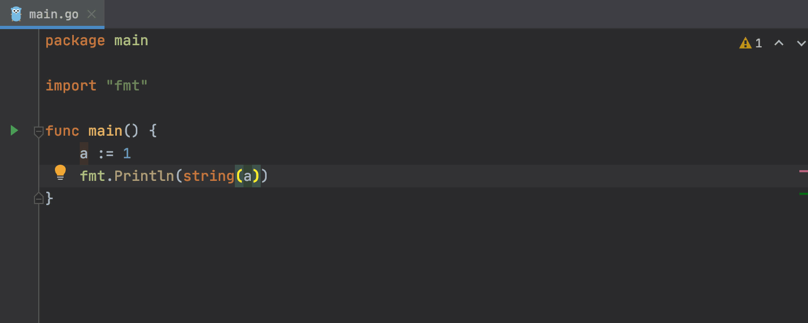
GoLand 会通知您有关测试和示例的常见错误用法，因此您不再需要为此而明确地使用 go vet。在简单情况下，IDE 还提供了快速修复程序。例如，它建议将 Testme 重命名为 TestMe。
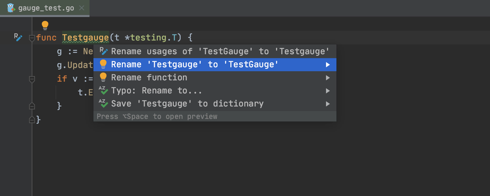
格式错误的 struct tags 代码检查将检查 struct tags 是否符合 Go 约定，并通知您潜在的问题。
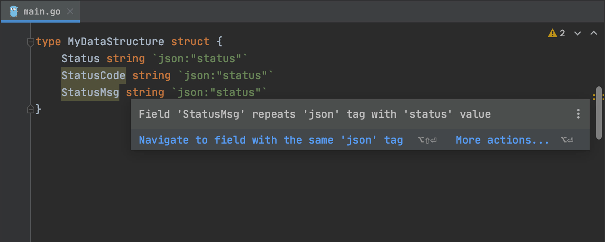
不可能的接口类型断言代码检查将检查类型断言 v.(T) 和相应的 type-switch case，其中 v 的静态类型 V 是无法实现目标接口 T 的接口。这发生在当 V 和 T 包含相同名称但签名不同的方法时。
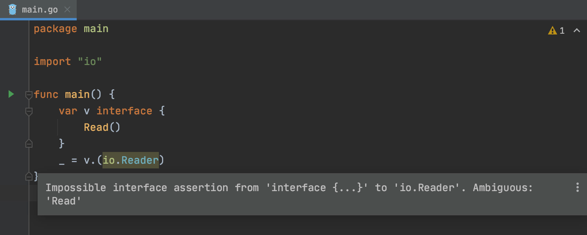
在控制下接受可变参数的论证
引入变量重构（在 Windows 和 Linux 上为 Ctrl + Alt + V，在 macOS 上为 ⌘ + ⌥ + V）可以将一些可变参数打包到新的 slice 变量中；相反的，内联变量（在 MacOS 上为 ⌥ + ⌘ + N 和在 Linux 上为 Ctrl + Alt + N），则将切片分解为可变参数。
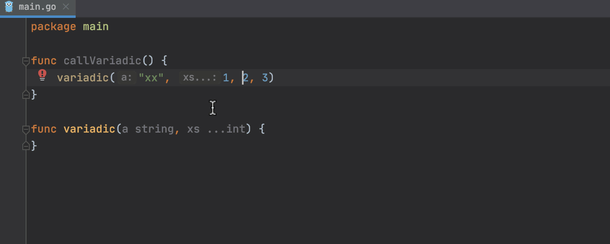
此外，您现在可以通过 Unpack slice 快速修复来处理解包的可变参数的问题。
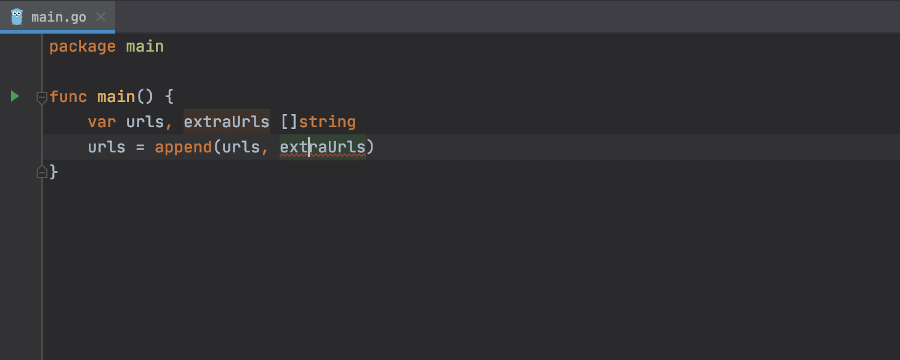
注释中的引用
IDE 显示注释中对相关程序包级别声明的引用，并允许您通过“导航到声明或使用”操作（在 macOS 上为 ⌘ + B，在Windows / Linux上为 Ctrl + B）来跳转。
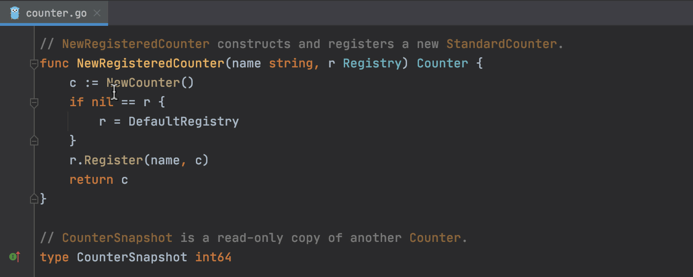
将项目另存为模板
现在，您可以通过将项目或文件另存为自定义项目模板来重复使用它们：选择 Tools | Save Project as Template。IDE 将使用文件、文件夹和构建配置重新创建项目树。
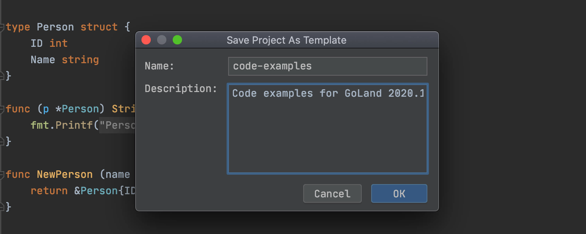
后台进程
更好地解决带有 Vendor 文件夹的项目
启用 vendoring 模式后，仅使用项目中 Vendor 文件夹中存储的依赖项包来构建应用程序。
现在，如果项目有一个 vendor 文件夹，并且您已经选中了 Settings/Preferences | Go | Go Modules 中的 Enable vendoring mode**automatically，这时只会使用 vendor 文件夹，而不会查询模块缓存。一个重要的优点是您可以更快地发现未解决的依赖项。
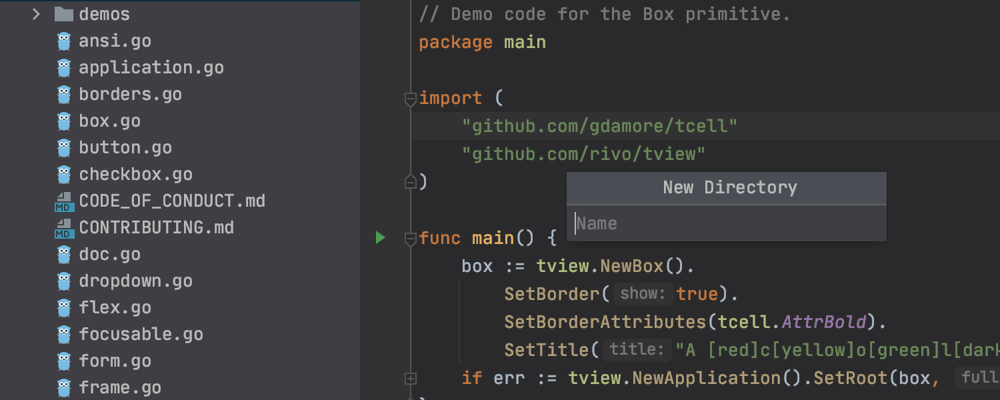
Go list 命令
GoLand 依序运行 go list 命令，并提供一个进度条，其中包含有关队列中 go list 命令的实际数量的信息。
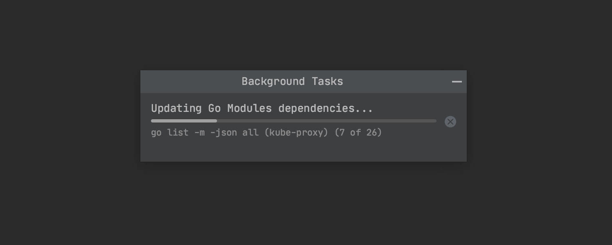
版本控制
WSL2 在 Windows 上对 Git 的支持
GoLand 2020.2 将允许您使用 WSL2 中的 Git，该版本在 Windows 10（2004 年 5 月更新）的本地版本中可用。如果 Windows 中未安装 Git，GoLand 将在 WSL 中自动查找 Git 并使用它。对于从 WSL 打开的项目，它还将自动从 WSL 切换到 Git（通过 \wsl$ 路径）。
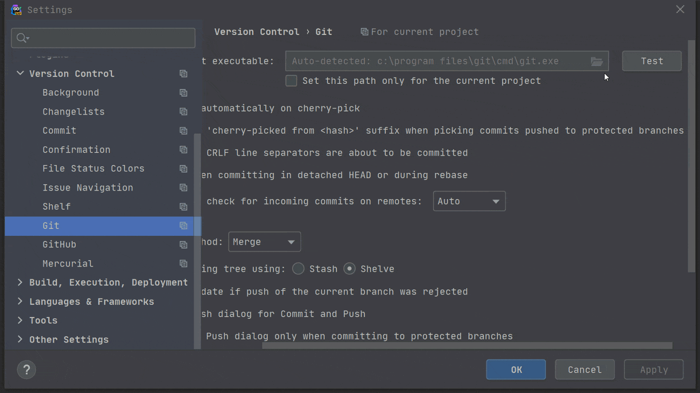
改进的 Git 操作对话框
我们针对 Merge, Pull 和 Rebase 之类的操作重新设计了 Git 对话框，以使它们更加一致和好用。我们还使您更容易理解将执行哪个 Git 命令，并在 “Pull” 对话框中添加了 –rebase 选项，在“Merge”对话框中添加了–no-verify 选项。
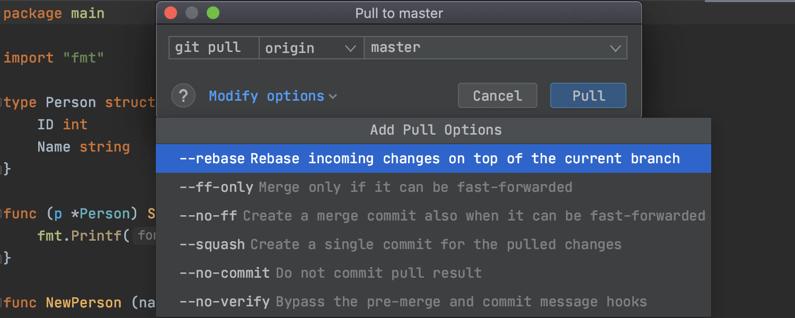
全面支持 GitHub Pull Request
GitHub Pull Requests 配备齐全！在不离开 GoLand 的情况下浏览，分配，管理，甚至合并拉取请求，查看时间线和内联注释，提交注释和评论以及接受更改。
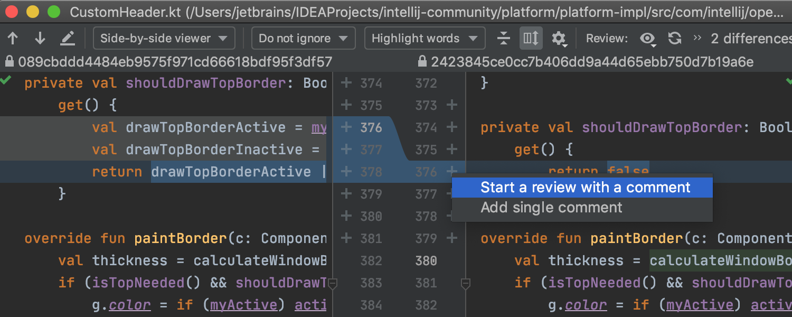
从日志中压缩（Squash）本地提交
现在，您可以在 Git 工具窗口的“日志”选项卡中选择多个本地提交，并将其压缩为一个。可以从右键单击上下文菜单中执行此操作。
改进了“比较分支”结果的表示方式
现在，当您在 GoLand 中比较 2 个分支时，可以在一个视图中查看比较后的分支的提交。IDE 现在将在编辑器中而不是在 VCS 工具窗口中打开要比较的两个分支的日志，在该窗口中没有足够的空间来显示所有信息。
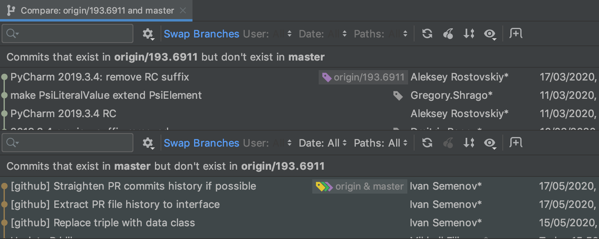
原文链接：https://blog.jetbrains.com/2020/07/16/goland-2020-2-reaches-beta/
日期：2020-07-16
编译：polarisxu